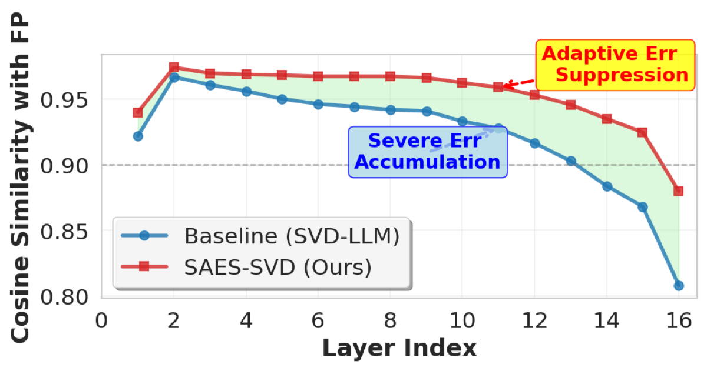

Why it matters왜 중요한가
A locally optimal compression of every layer is not a globally optimal model.
모든 층을 국소적으로 최적 압축해도, 모델 전체가 최적이 되는 건 아니다.
Low-rank / SVD compression is attractive because it is hardware-agnostic, post-training, and stacks with quantization or pruning. But every prior method — ASVD, SVD-LLM, AdaSVD, DipSVD — optimizes one layer at a time. Even SVD-LLM, which provably hits the minimum truncation error per layer, watches end-to-end fidelity collapse: a compressed early layer shifts the input distribution of the next layer, so the errors compound with depth. SAES-SVD reframes the problem as globally coordinated error suppression: each layer perceives the accumulated upstream deviation and corrects for it, rather than greedily minimizing its own residual.
저랭크/SVD 압축은 하드웨어 비의존·사후학습이며 양자화·프루닝과 결합 가능해 매력적이다. 하지만 기존 방법(ASVD, SVD-LLM, AdaSVD, DipSVD)은 모두 한 번에 한 층씩 최적화한다. 층별 최소 절단오차를 이론적으로 달성하는 SVD-LLM조차 엔드투엔드 충실도가 무너진다 — 압축된 앞 층이 다음 층의 입력 분포를 바꾸므로 오차가 깊이에 따라 누적되기 때문이다. SAES-SVD는 이를 전역적으로 조율되는 오차 억제 문제로 재정의한다: 각 층이 상류의 누적 편차를 인지하고 이를 보정하며, 자기 잔차만 탐욕적으로 줄이지 않는다.

By the numbers핵심 숫자
(LLaMA-7B; others >0.05)정확도 하락 @ 0.2 압축
(LLaMA-7B; 타 방법 >0.05)
vs Dip-SVD @ 20%제로샷 정확도 하락 감소
vs Dip-SVD @ 20%
vs Dip-SVD @ 20%퍼플렉서티 격차 감소
vs Dip-SVD @ 20%
across layers (the problem)SVD-LLM 코사인 유사도 감소
층 누적 (문제 현상)
(SVD-LLM 7.94, base 5.68)WikiText2 PPL @ 0.2
(SVD-LLM 7.94, 원본 5.68)
no fine-tuning, no mixed-rank층당 SVD 1회
파인튜닝·혼합랭크 불필요
Results — closing the gap to full precision결과 — 풀정밀과의 격차 좁히기
| Method | Wiki2 ↓ | Avg Acc ↑ | Drop ↓ |
|---|---|---|---|
| SVD-LLM† | 7.94 | 0.44 | 14.7% |
| Dobi-SVD∗† | 8.54 | 0.46 | 10.8% |
| Dip-SVD∗ | 7.95 | 0.47 | 9.2% |
| SAES-SVD (Ours) | 7.17 | 0.50 | 3.9% |
At the aggressive 0.6 ratio the gap widens further in SAES-SVD's favor: WikiText2 perplexity 22.01 vs 53.74 (SVD-LLM), keeping the accuracy drop under 0.03 while baselines exceed 0.05. † = needs fine-tuning, ∗ = uses mixed-rank; SAES-SVD uses neither.
공격적인 0.6 압축에서는 격차가 더 벌어진다: WikiText2 퍼플렉서티 22.01 vs 53.74(SVD-LLM), 정확도 하락을 0.03 미만으로 유지하는 반면 베이스라인은 0.05를 넘는다. † = 파인튜닝 필요, ∗ = 혼합랭크 사용; SAES-SVD는 둘 다 불필요.
In one diagram한 장의 그림
The two ideas두 가지 핵심 아이디어
CEALC
Augment the per-layer objective with an FP-reference alignment term: minimize ‖(AB−W)Xℓ‖² + α‖ABXℓ − WXℓf‖². This collapses to a single whitened target Wℓ(Hℓ + β∆ℓ)Hℓ−1/2, where ∆ℓ = (Xℓf − Xℓ)Xℓ⊤ is the differential covariance. A truncated SVD gives a closed-form solution using only second-order statistics — no raw activation storage.
층별 목적함수에 풀정밀 기준 정렬항을 추가: ‖(AB−W)Xℓ‖² + α‖ABXℓ − WXℓf‖² 를 최소화. 이는 단일 화이트닝 타깃 Wℓ(Hℓ + β∆ℓ)Hℓ−1/2 로 정리되며, ∆ℓ = (Xℓf − Xℓ)Xℓ⊤ 는 차분 공분산이다. 절단 SVD가 2차 통계만으로 닫힌 해를 제공 — 원시 활성값 저장 불필요.
ACES
A fixed α can scatter spectral energy and break the low-rank structure. ACES auto-selects β = α/(1+α) per layer to maximize the Retained Energy Ratio — the fraction of squared singular values kept in the top-r subspace. A first-order subspace approximation (Theorem 4.2) reduces this to solving a quadratic, avoiding a fresh SVD per candidate β.
고정 α는 스펙트럼 에너지를 분산시켜 저랭크 구조를 깰 수 있다. ACES는 층별로 β = α/(1+α) 를 자동 선택해 보존 에너지 비율(RER), 즉 상위 r 부분공간에 남는 특이값 제곱 비율을 최대화한다. 1차 부분공간 근사(Theorem 4.2)로 이를 2차 방정식 풀이로 환원해, β 후보마다 새 SVD를 돌리지 않는다.
How it works어떻게 작동하나
- Collect statistics통계 수집For each layer, gather the input covariance Hℓ = XℓXℓ⊤ and the differential covariance ∆ℓ = (Xℓf − Xℓ)Xℓ⊤ (compressed vs full-precision input), GPTQ-style, batch by batch.각 층에서 입력 공분산 Hℓ = XℓXℓ⊤ 와 차분 공분산 ∆ℓ = (Xℓf − Xℓ)Xℓ⊤(압축 vs 풀정밀 입력)를 GPTQ 방식으로 배치별 수집.
- Pick β to maximize retained energy보존 에너지 최대화 β 선택Freeze the principal subspace at β=0 and solve the quadratic from FS-FOA to get the optimal β⋆ ∈ [0,1] for this layer.β=0에서 주부분공간을 고정하고 FS-FOA의 2차식을 풀어 해당 층의 최적 β⋆ ∈ [0,1] 결정.
- Whiten and truncate화이트닝 후 절단Form Gℓ = Wℓ(Hℓ + β⋆∆ℓ)Hℓ−1/2, take its rank-r truncated SVD, and read off the closed-form factors A = ŨΣ1/2, B = Σ1/2Ṽ⊤Lℓ.Gℓ = Wℓ(Hℓ + β⋆∆ℓ)Hℓ−1/2 를 구성하고 rank-r 절단 SVD를 취해 닫힌 해 A = ŨΣ1/2, B = Σ1/2Ṽ⊤Lℓ 를 얻는다.
- Propagate residual forward잔차 전방 전파The remaining error is folded back into the next layer's second-order statistics, so downstream layers anticipate and compensate accumulated upstream errors — a closed-loop, single-pass mechanism.남은 오차는 다음 층의 2차 통계에 반영되어, 하류 층이 상류 누적 오차를 미리 보정 — 단일 패스 폐루프 메커니즘.
What to take away그래서, 가져갈 것
Global beats local. Adding a cross-layer compensation term to plain SVD halves-to-thirds the accuracy gap without any fine-tuning or mixed-rank machinery.
전역이 국소를 이긴다. 평범한 SVD에 층간 보상항을 더하면 파인튜닝·혼합랭크 없이 정확도 격차를 1/2~1/3로 줄인다.
Closed-form, cheap. Everything reduces to second-order statistics + a quadratic for β + one truncated SVD per layer — no iterative optimization, no stored activations.
닫힌 해, 저비용. 모든 것이 2차 통계 + β용 2차방정식 + 층당 절단 SVD 1회로 환원 — 반복 최적화도, 활성값 저장도 없음.
Diagnosis is the contribution. The 0.97→0.79 cos-sim decay is a clean demonstration that per-layer-optimal ≠ end-to-end-optimal — useful framing for any layerwise compression.
진단 자체가 기여다. 0.97→0.79 유사도 감소는 층별 최적 ≠ 엔드투엔드 최적임을 깔끔히 보여준다 — 모든 층별 압축에 유용한 관점.